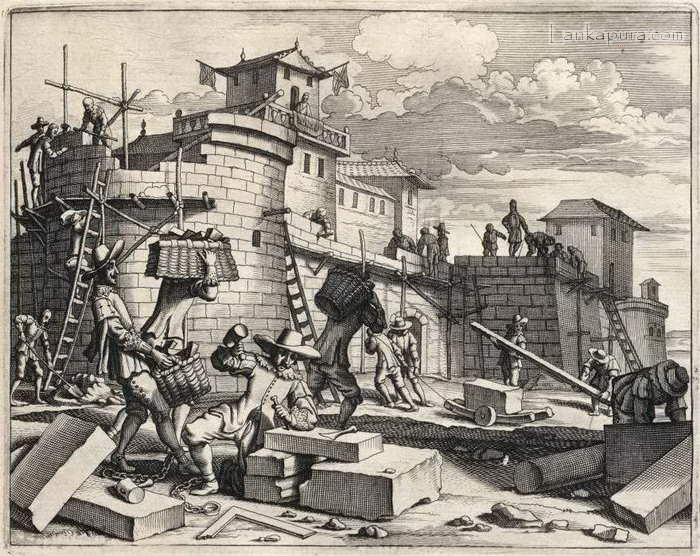
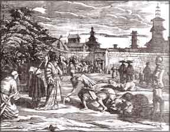
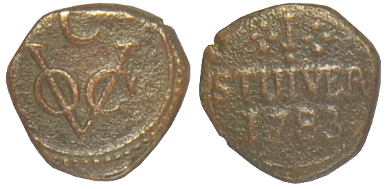
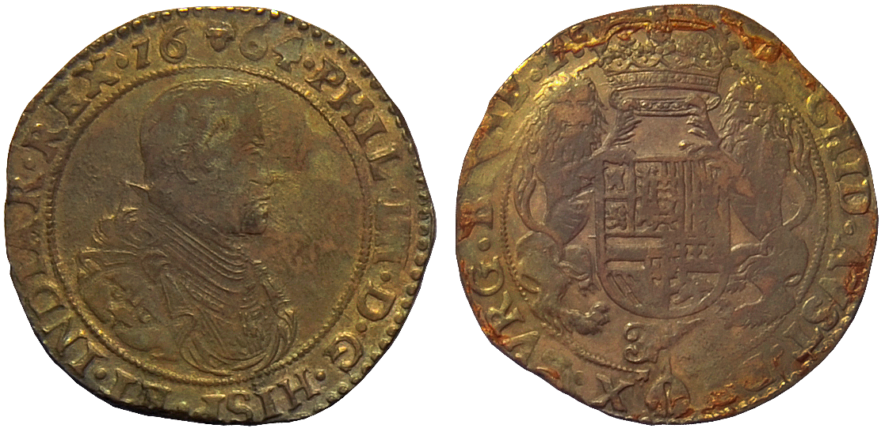
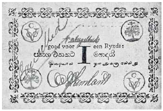
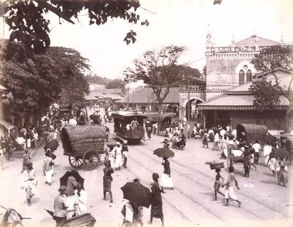

Even though we divided Sri Lanka’s past into eras such as Anuradhapura, Polonnaruwa and Kandy; in all those eras, the entirety of Sri Lanka was never governed by one King. In different instances, the island was invaded by foreign powers. However, until the Kotte Era, the only invaders were the Chola. Despite such instabilities, we were able to make profits through international trade (via the Silk Road), win praise and maintain our splendid international reputation. But in 1453 A.D, the situation changed as a consequence of the fall of Constantinople (Capital of the Byzantine Empire). Europeans began to seek a route to the East over the great ocean. Eventually, the Europeans were victorious in the East and the West. As a result, Sri Lanka was colonized by the Portuguese, the Dutch and the English respectively.

In 1505, the Governor and Viceroy of the Portuguese State of India was Don Francisco de Almeida. His son was Lorenzo de Almeida. He was in the process of attacking and thieving Muslim ships. The common belief is that Lorenzo de Almeida and his team were caught in a storm while pursuing a group of Muslim ships and were consequently washed ashore somewhere near Galle, Sri Lanka. But it is hard to believe that the avaricious Portuguese of that time turned their attentive eye towards the prosperous trade center that was Sri Lanka only after such a coincidental happening. The Portuguese took control of the coastal areas of Sri Lanka in 1505 A.D. and then from 1506 – 1658 a few different types of coins were minted and circulated.
The Portugal Coat of Arms appears on one side of the Malacca coin. On either side of the seal the letters AM, MA or DM can be seen. AM is the abbreviation for Asian Malacca. Similarly, MA and DM are abbreviations for Malacca and De Malacca respectively. To indicate that it is Thangam;, the letters A and T appear superimposed on the flipside of the coin. On the same side, the year of production is also stated.
The Portuguese minted some of these coins in Goa specifically to be used in Sri Lanka. These particular coins have the Portuguese Coat of Arms flanked by the letters GA on one side and the letters DS (superimposed) on the opposite side. DS is an abbreviation for ‘De Seylao’ which was the term used for Sri Lanka.
The coin ‘Gini Maessa’ is commonly known as ‘Gini Massa’. There is an inscription of a gridiron on its flipside. Therefore this coin should be known as “Gini Maessa” which means gridiron in Sinhala. The Portuguese landed on this island in 1505 A.D. Before their immediate departure, they had a small fortress
constructed in Colombo in the name of Saint Lawrence. He had departed this life while burning on a gridiron. Therefore Gini Maessa coins were minted and issued in memory of his final moments. It is possible that this was the first commemorative coin issued by people of the West in Sri Lanka. Gini Maessa coins were issued as Thangama coins in 1640 and Dvi Thangama coins in 1645.
This series of coins bear the Portuguese Coat of Arms on one side (with GA imprinted on either side) and an image of a Saint on the flipside. Letters such as ST or SF are printed on either side of the image in order to indicate which Saint was being portrayed on the coin. These letterings represent Saint Thomas and Saint Filipe respectively.
Aside from these, coins such as Crusado, Chakram, Panam, Larins as well as Gold Panam, Gold Pagodi and silver Panam were used during the Portuguese era.

In 1658 A.D, the Dutch drove out the Portuguese and took control of the coastal areas of Sri Lanka. First Batticaloa (in 1638), then Galle (in 1640), Colombo (in 1656) and finally Jaffna (1658) came under Dutch control. In 1638, after they acquired the Portuguese Fort, the Dutch made a treaty with King Rajasingha II (1635-1687). Section 14 of the treaty contains a multitude of rules regarding the use of money. According to the agreement, unless sanctioned by the King or the Dutch government, the acts of printing, producing publicizing, minting counterfeit coins or circulation was deemed illegal.
The coin that was most commonly used in transactions of this period is the Duit. This is a type of very small Copper coin. Due to its size, it was very inconvenient to count large numbers of Duits during transactions. To lessen the inconvenience, in 1737, numbers of Duits were joined together to form strings or chains of Duits.For instance, when 8, 16 or 24 Duits were strung together they represented the values of 2,4, and 6 Thuttu respectively.
However, this measure did not prove to be as successful as anticipated. In the 18th century, the Dutch began to mint their Thuttu coins in Sri Lanka. In 1781, the Ductch established the first coin minting factory and it was located near Kayman’s Gate in Colombo.
Another Dutch coin that was being used in Sri Lanka is the Rix - Dollar. In Sinhalese, these were called Pathaga. The Rix – Dollar was a type of Silver coin.
The Dutch also introduced the Silver one Rupee coin to Sri Lanka. They were minted in 1781 and 1786. On the face of the coin it said: The Colombo Dutch Company’s coin. On the Back of the coin “Lanka Island Currency” is stated in Arabic. The year of release also appears on the back.

C Duit Half Hollandia Duit
Half Hollandia Duit
 Hollandia Duit
Hollandia Duit
 Quarter C Duit
Quarter C Duit
 T Duit
T Duit West Friesland Duit
West Friesland Duit

Ducatoon Bathavian Mintage
Bathavian Mintage
 Ceylon Stuivers - 1
Ceylon Stuivers - 1
 Ceylon Stuivers - 2
Ceylon Stuivers - 2
 Ceylon Stuivers - 3
Ceylon Stuivers - 3Up until the last half of Dutch Sri Lanka, only coins were used in transactions. But in the final years of the 1700s, Dutch security expenditure increased exponentially. The expenditure vastly surpassed income and almost emptied the treasury. The birth of the banknote took place against this backdrop.
So on March 19, 1785 banknotes equivalent to 25,000 Pathaga were authorized for printing. Accordingly, Sri Lanka’s first series of banknotes was issued on the 10th of May, 1785. The first notes had values equivalent to 50, 100, 500 and 1000 Pathaga. Afterwards, notes of 1,2,3,4,5,10 Pathaga were also printed. These notes contained the signatures of three government officials.

Banknote equivalent to one 'Pathaga'
The French revolution resulted in a major shake-up among the European powers and in 1796 the Dutch were easily supplanted by the British, who in 1815 also won the control of the kingdom of Kandy, becoming the first European power to rule the whole island. But in 1802, Sri Lanka became a Crown Colony and in 1818 a unified administration for the island was set up.
There are two types of coins the English used for transactions in Sri Lanka. The first was a gold coin minted in Madras known as ‘Tharaka Pagodi’ or the Star Pagodi. One Star Pagodi was the equivalent of 45 Panam or 180 Thuttu. The second type of coin was a Copper one. They were minted in England in 1794 and 1797. It was equivalent to 1/96 (gold coin) and 1/48 (copper coin) of a Rupee. ‘United East India Company’ was printed on one side with the year it was issued. The Royal Coat of Arms and the value of the coin could be seen on the other side of the coin.
481-1st StiverThey also issued ½ Thuttu and ¼ Thuttu coins in 1801. On one side of these coins there was an image of a tusker and the year it was issued. On the flipside, Ceylon Government is engraved along the edge while the value of the coin can be seen at the center. The value on the Thuttu is 48 and the value on the ½ Thuttu is 96. The value on the ¼ Thuttu is 192. These values illustrate the number of each coin needed to match a Pathaga. Multiple batches of these coins were minted between 1801 and 1804.
PenceLike the Dutch, the English also issued banknotes in addition to coins. The first series was issued in 1800. Up until 1801, monetary quantities were recorded in English publications using the Star Pagodhi system. But this method changed after the areas under British control came under the Chief Secretary in charge of Colonial Regions. From then on, Pathaga, Panam and Thuttu were used in recording monetary quantities. Thus the ¼ Pagodhi became equivalent to 1 Pathaga. (1/4 Pagodhi=1 Pathaga)
From 1808 to 1818, ½, 1 and 2 Pathaga (silver) were minted occasionally and their values appeared on the coins as 24, 48 and 96 respectively. In 1803-1817, the copper coins Panam, Thuttu and Thuttu Deka (two Thuttu) were issued as well.
2 Cents - 1895In the time of British – Sri Lanka, currencies such as Farthing, British Thuttu, Pathaga (Silver Coin), Panam, Indian Rupee, ½ Rupee and ¼ Rupee were in use. The cent, two -cent, five-cent, ten cent, twenty-five –cent and fifty –cent coins were also used as units that had values less than the Rupee.
As a solution for colossal shortage faced in 1815, British took a large number of Duits (worth 37,339 Pathaga) confiscated from the Dutch and re-circulated them as their own currency.
10 Cents - 1900Under the provisions of the Emergency Powers Acts. 1939 and 1940 the Board of Currency was authorized to issue denominations below one rupee to meet the shortage of coins. The Board of Commissioners issued subsidiary notes for the values of 5 cents, 10 cents, 25 cents, 50 cents and 1 rupee. Of these notes, the 5 cents carried imprints of postage stamps of 2 cents and 3 cents.
In addition to these subsidiary notes, the Board of Commissioners issued notes worth 1 rupee, 2 rupees, 5 rupees, 10 rupees, 50 rupees, 100 rupees, 500 rupees, 1,000 rupees and 10,000 rupees. The 10,000 rupee currency note was used only for inter bank transactions.
Preview
Next
05. Post-Independence Period since Establishment of the Central Bank of Ceylon